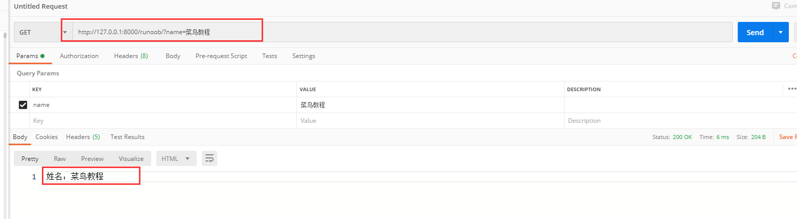
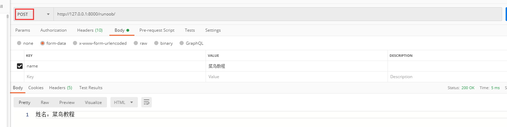
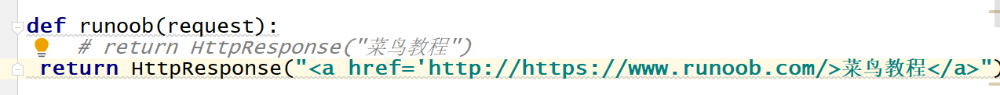
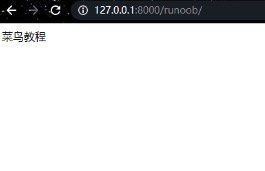

Django views
view layer
A view function, or view for short, is a simple Python function that accepts a web request and returns a web response.
The response can be an HTML page, a 404 error page, a redirect page, an XML document, or an image...
Regardless of what logic the view itself contains, it must return a response. The code can be written anywhere, as long as it is under the Python directory; it is generally placed in the project's views.py file.
Each view function is responsible for returning an HttpResponse object, which contains the generated response.
There are two important objects in the view layer: the request object (request) and the response object (HttpResponse).
Request object: HttpRequest object (referred to as request object)
The following introduces several commonly used request attributes.
1、GET
The data type is QueryDict, a dictionary-like object that contains all parameters of HTTP GET.
If there are duplicate keys, all values are placed into the corresponding list.
Value format:object.method。
get(): Returns a string; if the key corresponds to multiple values, it retrieves the last value for that key.
Example
name = request.GET.get("name")
return HttpResponse('Name: {}'.format(name))

2、POST
The data type is QueryDict, a dictionary-like object that contains all parameters of HTTP POST.
Commonly used for form forms; the name attribute of the label in the form corresponds to the key of the parameter, and the value attribute corresponds to the value of the parameter.
Value format:object.method。
get(): Returns a string; if the key corresponds to multiple values, it retrieves the last value for that key.
Example
name = request.POST.get("name")
return HttpResponse('Name: {}'.format(name))

3、body
The data type is a binary byte stream, which is the parameter content in the raw request body. In HTTP, it is used for POST because GET has no request body.
It is not commonly used in HTTP, but is very useful when processing non-HTTP message formats, such as binary images, XML, JSON, etc.
Example
name = request.body
print(name)
return HttpResponse("Runoob")

4、path
Gets the path part of the URL; the data type is string.
Example
name = request.path
print(name)
return HttpResponse("Runoob Tutorial")

5、method
The way to obtain the current request: the data type is a string, and the result is in uppercase.
Example
name = request.method
print(name)
return HttpResponse("Runoob")

Response object: HttpResponse object
The response object mainly comes in three forms: HttpResponse(), render(), redirect().
HttpResponse():Returns text; the parameter is a string, and the text content is written in the string. If the string parameter contains HTML tags, it can also be rendered.
Example
# return HttpResponse("Runoob")
return HttpResponse("<a href='/index.html'>Rookie Tutorial</a>")

render():Returns text; the first parameter is request, the second parameter is a string (page name), and the third parameter is a dictionary (optional parameter, parameters passed to the page: the key is the page parameter name, and the value is the views parameter name).
Example
name ="Runoob"
return render(request,"runoob.html",{"name":name})

redirect(): Redirect, jump to a new page. The parameter is a string, and the page path is filled in the string. Generally used to jump to a new page after form submission.
Example
return redirect("/index/")
render and redirect are wrappers built on top of HttpResponse:
- render: what it returns at the underlying level is also an HttpResponse object
- redirect: what it inherits at the underlying level is the HttpResponse object